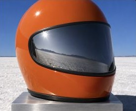
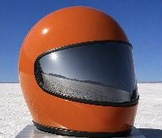
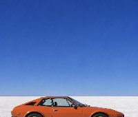
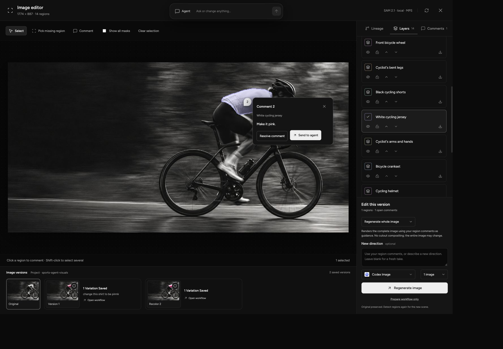
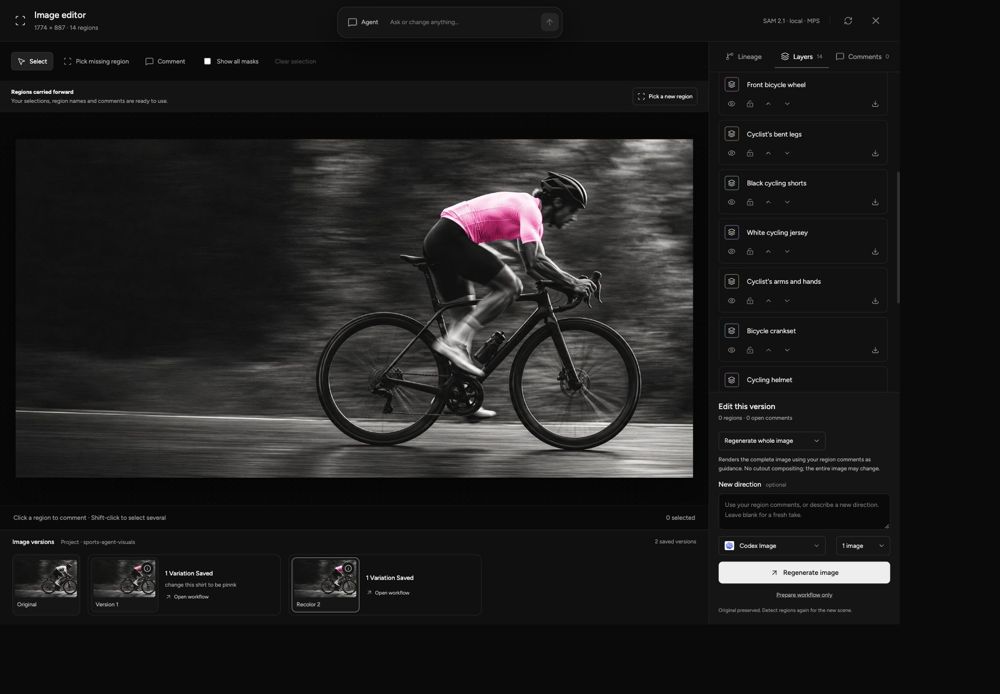

Click anywhere or press Esc to close
A local canvas for image, GIF and video workflows. Shape one direction, fan it into scenes and models, and keep every output's lineage. Open source. Runs on your machine.
Stop pasting prompts into chat boxes. Wire a direction once, run it through every model you own, and get back images that remember exactly where they came from.
A seed image and one shared art direction go in. Four named scenes run through the model you choose. Every image comes back with its lineage.

A reference image connected to every scene.
Shared art direction: “SALT / SPEED — a fictional salt-flat racing campaign.” Add reusable rules such as “No incidental lettering”.
Plan shows the job count before anything runs.


Each image keeps its resolved prompt, settings and inputs.
Named scenes with per-scene copy, seed and aspect overrides, all inheriting one shared art direction.
Codex, Claude Code, Gemini CLI, Pi, OpenAI-compatible, Google video, Grok, fal, Ollama, ComfyUI — chosen explicitly per branch.
See total image, text and video jobs before inference. Concurrency-limited queues. Failed jobs never silently switch providers.
Resolved prompts, settings, inputs and ancestry on every output. Fork any historical run exactly.
Local SAM 2.1 segmentation, named layers, inline comments, mask-preserving recolor and a version strip.
Binds to 127.0.0.1. Local storage lives in .flow/. You choose which inputs go to a provider. No hosted Flow account.
The real Flow image editor. SAM 2.1 finds regions on your machine, your selected vision harness names them, and you comment on the exact pixels you mean. Recolor inside the mask, or send the note to an agent.


14 regions on this frame, segmented on-device (MPS). Finding masks needs no cloud call.
“White cycling jersey”, “Front bicycle wheel”, “Cycling helmet” — named by the vision harness you choose; rename, lock, reorder or export any layer.
Select the jersey, write “Make it pink.” Resolve it, or hand it to an agent with the region attached.
Every pixel outside the jersey stays put. Regions, names and comments carry into the new version.
Original, Version 1, Recolor 2 — each one opens back into its workflow with full lineage.
The CLI, JavaScript client and MCP server use the same services as the canvas. Hand your agent the checkout and one instruction.
Everything on the canvas is a versioned .flow.json file — seed reference, art direction, rules and scenes. Commit it, diff it in review, let an agent edit it, run it from CI. The canvas and the file are the same graph.
flow plan counts every job before a single image is generated.git clone https://github.com/galElmalah/flow.git && cd flow && npm ci && npm run setup && npm run demo